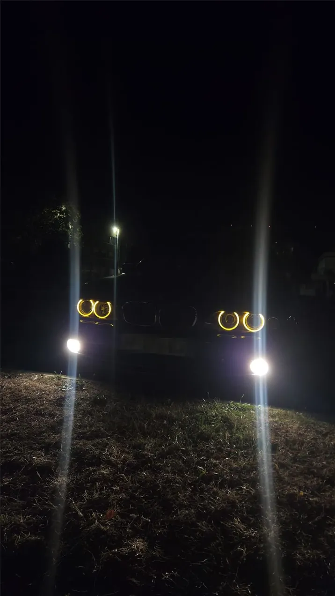
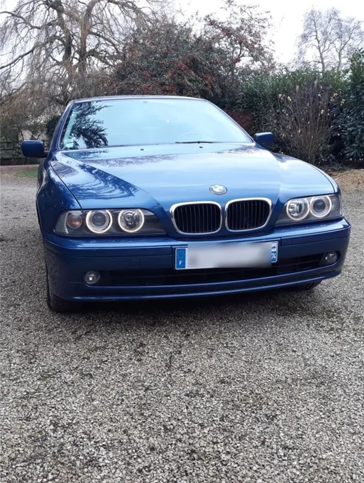
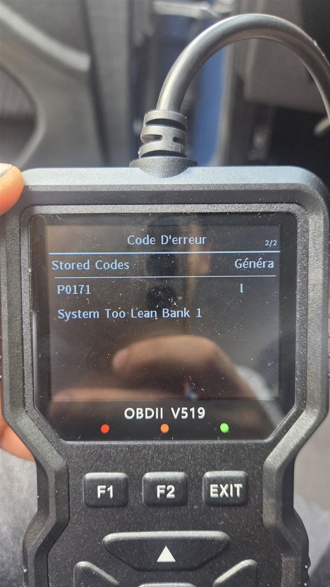
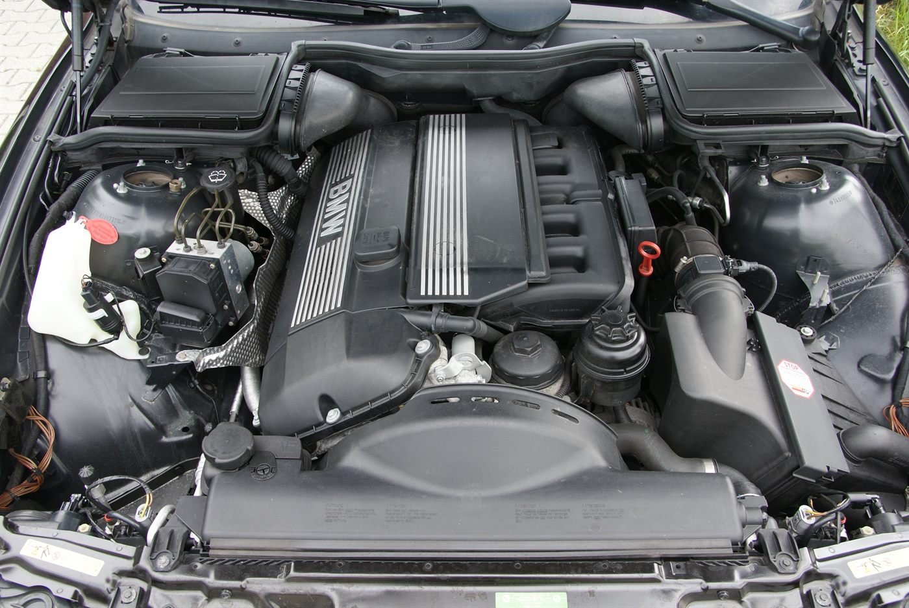
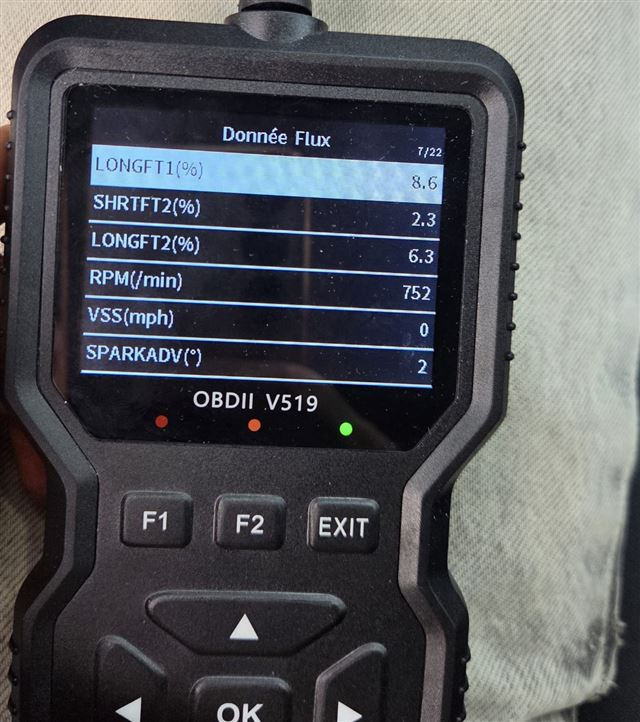
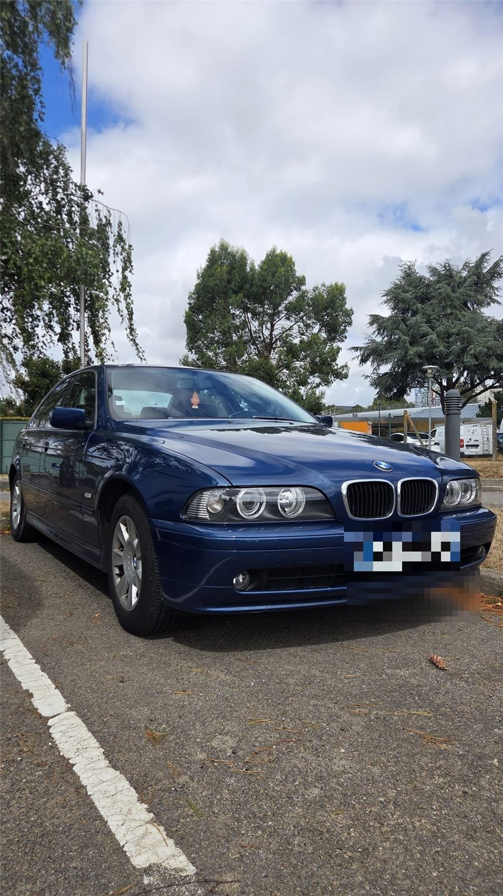
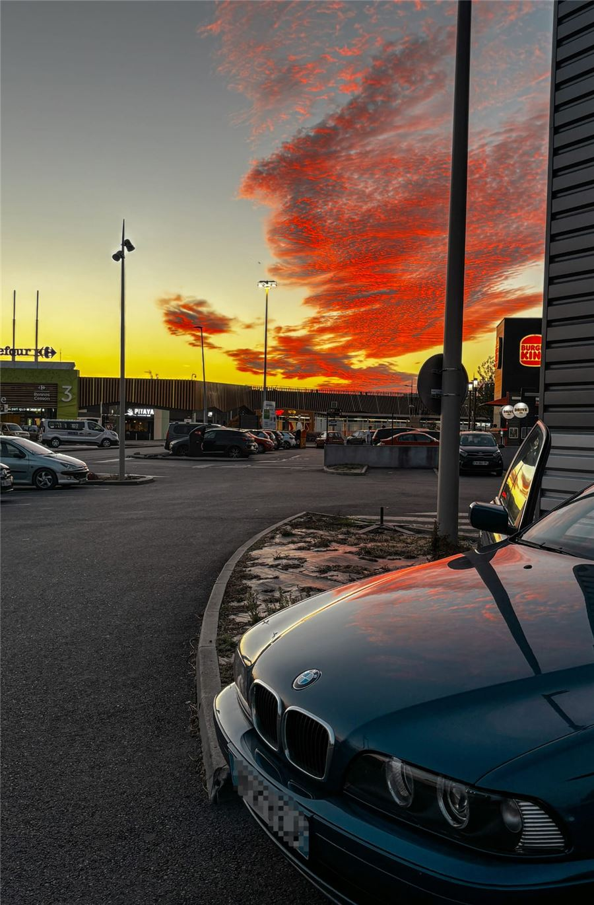
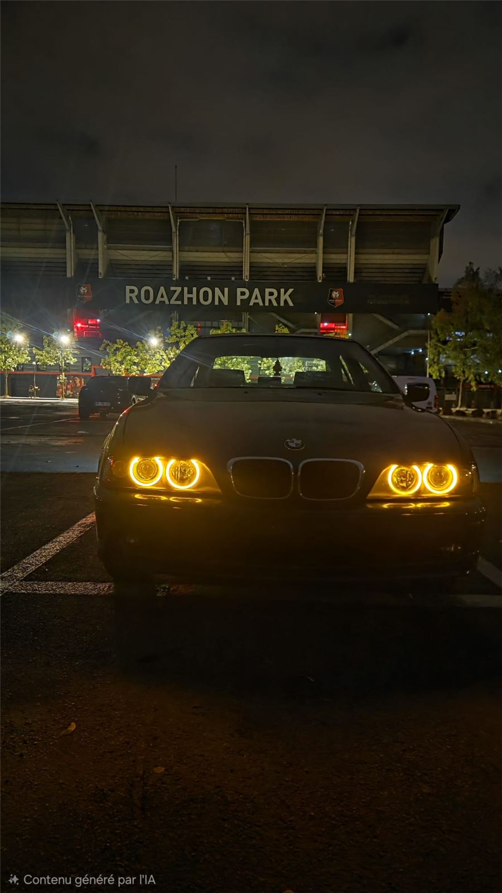
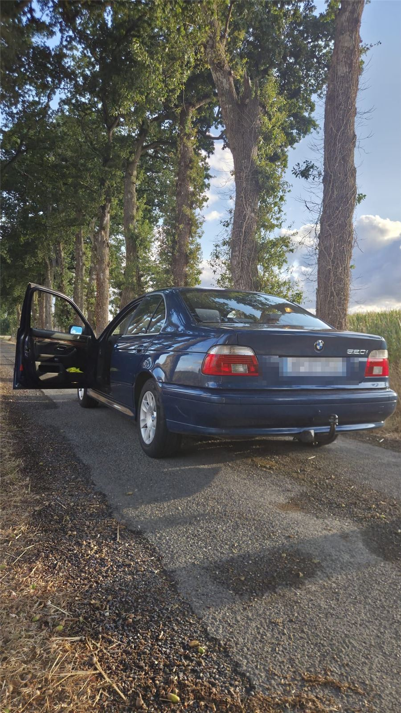
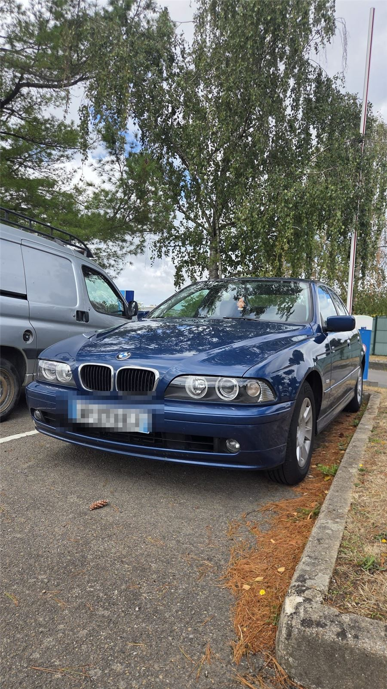

Projet automobile · terminé
BMW E39 520i
Une berline de 2002, achetée le 16 août 2026 à environ 164 000 km. Une base saine, de l'entretien à reprendre — et un mélange pauvre à comprendre. Chaque intervention a été mesurée, raisonnée, puis vérifiée.
- MoteurM54B22
- Architecture6 cylindres en ligne
- Cylindrée2,2 L
- Puissance170 ch
- GestionSiemens MS43
- BoîteManuelle


La méthode
Mesure, hypothèse, vérification.
Une seule modification à la fois, puis relecture des valeurs avant de conclure. C'est la règle qui évite de remplacer trois pièces pour une panne qui n'en demandait qu'une.
-
01 · Mesure
Le calculateur ajoute de l'essence des deux côtés : +7,0 % / +4,7 % au ralenti le 08/10, puis +8,6 % / +6,3 %. Codes P0171 et P0174 : mélange trop pauvre.
-
02 · Hypothèse
Le banc 1 a environ 2 points d'avance : une prise d'air côté banc 1. Le débitmètre de 2001 sous-lit de 6 à 7 % à fort débit : un contributeur commun.
-
03 · Vérification
Test fumée le 14/10 : la fuite est au manchon d'admission. Débitmètre neuf, joint DISA remplacé. Relevé après intervention : 0 % / 0 %.
Les chantiers
Ce qui a été fait.
-
03/10/2026
Pompe à essence AEM 340 L/h
La pompe d'origine fatiguait : démarrages difficiles, plusieurs coups de clé, perte de puissance. Le diagnostic n'a pas été fait au doigt mouillé : la pression de rampe a été vérifiée au kit manomètre — trop basse.
Remplacement par une AEM 340 L/h (réf. 50-1220), choisie pour sa compatibilité E85. Un calage juste après le montage venait des raccords sertis faits maison, pas de la pompe. Depuis : ralenti normal, reprises meilleures.
Leçon : jamais de raccordement sur le faisceau d'origine sans adaptateur — une polarité inversée fait tourner la pompe à l'envers.
- AEM 340 L/h · 50-1220
- Pression attendue : ~3,5 bar (spécification)
-
08 — 09/10/2026
Diagnostic du mélange pauvre
Log complet du calculateur (MS430DS0, environ 110 points) et lectures à la valise V519. Les corrections carburant montent des deux côtés, le banc 1 devant.
- 42 %duty cycle injecteurs à 4 646 tr/min — sains, loin du seuil de 85 %
- 121 g/sdébit d'air mesuré, contre 129 à 140 g/s attendus : le débitmètre sous-lit
- +2 ptsd'écart banc 1 / banc 2 : le signe d'une prise d'air localisée
Les deux causes coexistent sans se contredire : une prise d'air côté banc 1 et un débitmètre vieilli. Le test fumée tranchera la première ; un débitmètre neuf, la seconde.

Photo réelle : le code P0171 lu au V519. -
13/10/2026
Débitmètre neuf et joint DISA
Le débitmètre d'origine Siemens 5WK9 605 (BMW 13 62 1 432 356), daté de 2001, est remplacé par un Pierburg 7.07759.09.0. Le même soir, le joint de la DISA — légèrement aplati — est changé.
Relevé du jour : LTFT +3,1 % / 0,0 %. Le banc 2 est revenu à zéro, le banc 1 garde un reste : la prise d'air n'est pas encore trouvée.
- Débitmètre neuf · Pierburg 7.07759.09.0
- Ancien · Siemens 5WK9 605 (2001)
Le débitmètre mesure la masse d'air : 3,0 g/s au ralenti, 121 g/s en pleine charge en 3e (relevés du 08/10, ancien débitmètre). La DISA change la longueur du chemin de l'air. Son joint aplati était un candidat côté banc 1 : remplacé le 13/10. -
14/10/2026
Test fumée : la fuite est trouvée
Avec la machine à fumée d'un ami, moteur froid et arrêté, durite obturée côté filtre : la fumée suit le chemin de l'air et ressort là où l'air non mesuré entrait. Verdict : fuite au manchon d'admission.
Le manchon d'admission et le raccord en F sont remplacés. L'air qui entrait sans passer par le débitmètre ne fausse plus le dosage.
- Manchon débitmètre → papillon : fuite
- Joint DISA · durites CCV · bouchons du collecteur · tube de jauge
-
18/10/2026
Réfection complète du refroidissement
Le 2 octobre, le liquide s'échappait par le bouchon à chaud : un bouchon neuf de 1,4 bar qui ventile, c'est une surpression réelle. Le radiateur fuyait — patch époxy le 6 octobre, en attendant les pièces.
Le kit complet est monté : radiateur Nissens 60648A, pompe à eau Meyle 313 011 2001, thermostat Mahle TM 13 97, puis purge soigneuse du circuit.
- Radiateur · Nissens 60648A
- Pompe à eau · Meyle 313 011 2001
- Thermostat · Mahle TM 13 97
Froid : clapet fermé, petit circuit. Chaud : la cire se dilate, le clapet s'ouvre, le radiateur entre en jeu. Sur le roulage du 08/10, le liquide est resté entre 83 et 98 °C.
Le résultat
Retour à zéro.
Les corrections long terme (LTFT) disent combien d'essence le calculateur ajoute pour compenser. Après l'intervention, il n'a plus rien à corriger.
| Relevé | Banc 1 | Banc 2 |
|---|---|---|
| 08/10 · V519 | +7,0 % | +4,7 % |
| V519 (photos du 09/10, mesure non datée) | +8,6 % | +6,3 % |
| 13/10 | +3,1 % | 0,0 % |
| Après intervention · relevé ponctuel | 0 % | 0 % |
+3,1 %
LTFT banc 1
0,0 %
LTFT banc 2
Documentation
Le M54 expliqué.
84 fiches, une par pièce de la maquette, rangées en 14 catégories. Chacune montre la pièce dans la voiture, la pièce seule en 3D et, quand elle existe, sa photo réelle.
La maquette reste une simplification : de nombreux petits éléments — durites, colliers, faisceaux électriques, capteurs, visserie — ne sont pas représentés.
Passer la visite guidée : aller à la maquetteLe moteur
Le M54 en pièces.
Une maquette du six cylindres dans sa carrosserie : faites-la tourner, ouvrez la vue éclatée, cliquez une pièce pour ouvrir sa fiche. Portes, capot et coffre s'ouvrent au clic ; le cache moteur se retire.
La maquette reste une simplification : de nombreux petits éléments — durites, colliers, faisceaux électriques, capteurs, visserie — ne sont pas représentés.
Simulation · point mort
- Liquide de refroidissement
- Carburant (départ)
- Carburant (retour au réservoir)
- Huile moteur
- Ils circulent quand le moteur tourne (bouton Accélération).
Affichage
Chargement de la vue 3D…
Réel ou maquette
La photo, la maquette.
Un vrai compartiment moteur de E39 à moteur M54, et la maquette vue sous le même angle, capot ouvert. Faites glisser le curseur pour passer de l'un à l'autre.

Index des pièces
Toutes les pièces.
Une fiche par pièce : sa place dans la voiture et la pièce seule, en 3D. Dépliez une catégorie.
La maquette reste une simplification : de nombreux petits éléments — durites, colliers, faisceaux électriques, capteurs, visserie — ne sont pas représentés.
Encyclopédie
Le tour du propriétaire.
Touchez un point pour découvrir l'équipement ; portes, capot et coffre s'ouvrent au clic. Puis installez-vous au volant.
Glissez pour tourner autour de la voiture · clic droit pour déplacer
Place du conducteur : glissez pour regarder autour de vous
Fiche technique
La 520i, en chiffres.
BMW 520i E39 berline, 2002, boîte manuelle.
Moteur
- Moteur
- M54B22, 6 cylindres en ligne
- Cylindrée
- 2 171 cm³
- Puissance
- 170 ch à 6 250 tr/min
- Couple
- 210 Nm à 3 500 tr/min
- Puissance fiscale
- 11 CV
Transmission et freinage
- Transmission
- Propulsion
- Boîte
- Manuelle, 5 rapports
- Freins
- 4 disques, ventilés à l'avant
- Jantes et pneus
- 17 pouces sur la mienne, 235/45 R17
Gabarit
- Longueur × largeur × hauteur
- 4 775 × 1 800 × 1 435 mm
- Empattement
- 2 830 mm
- Poids
- 1 495 kg
- Coffre
- 460 L
- Réservoir
- 70 L
Performances et consommation
- Vitesse maximale
- 226 km/h
- 0 à 100 km/h
- 9,1 s
- Urbaine
- 12,2 L/100 km
- Extra-urbaine
- 7,1 L/100 km
- Mixte
- 9,0 L/100 km
Les relevés
Les relevés, en vrai.
Données AVANT réparation — roulage du 08/10/2026, log MS430DS0. Valeurs approximatives, relevées sur les graphiques du carnet de bord.
Corrections carburant
Positives = le calculateur ajoute de l'essence pour compenser un mélange pauvre.
VANOS : consigne contre réel
Admission et échappement, en degrés vilebrequin : la position réelle suit la consigne.
Sondes lambda
Tension des 4 sondes, en volts (VKAT = avant catalyseur, NKAT = après). Les sondes amont basculent entre pauvre et riche ; sur ce log, les sondes aval oscillent presque autant (écart-type ~0,32 V contre ~0,35 V). Les courbes sont présentées telles quelles, sans conclusion sur l'état des catalyseurs.
Températures
Liquide de refroidissement, huile (modélisée) et air admis, en °C.

La valise V519
Photo réelle : LONGFT1 +8,6 %, LONGFT2 +6,3 % au ralenti (752 tr/min). La dérive continuait, banc 1 devant.
Galerie
Ma voiture.





Informatique & automobile.